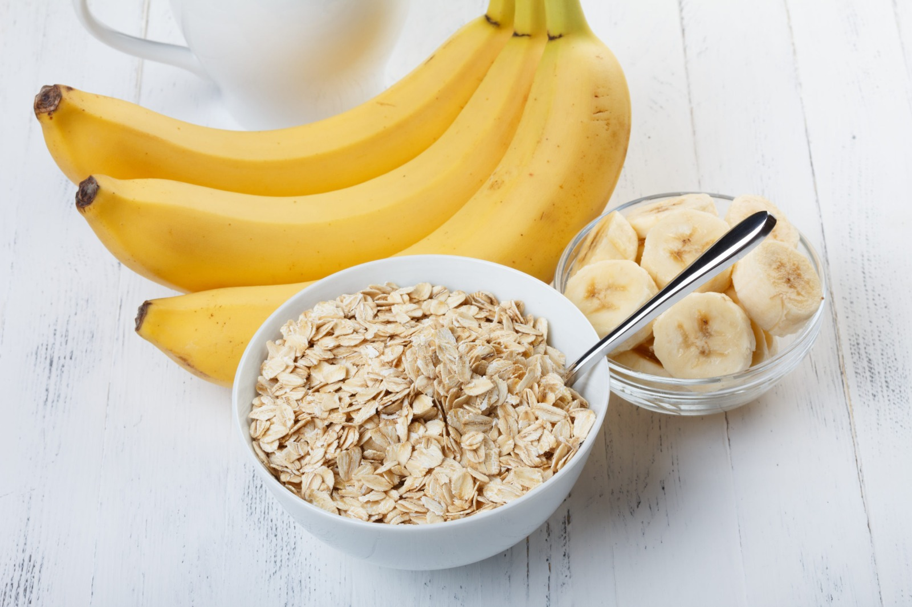
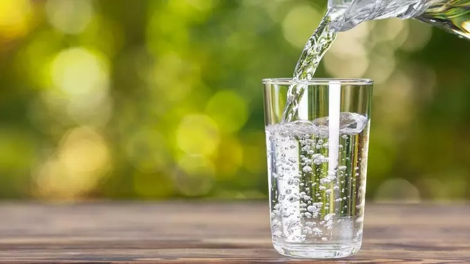
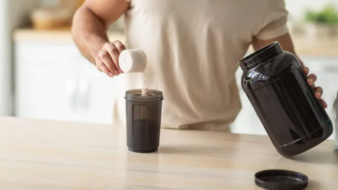
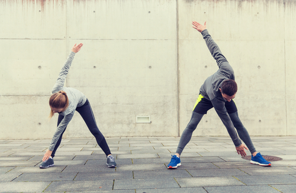

⚡ Pré-Treino: Preparando-se para o Máximo Desempenho
O pré-treino é uma etapa fundamental para otimizar o desempenho durante as atividades físicas. Uma preparação adequada pode aumentar a energia, melhorar o foco e prevenir lesões. A seguir, apresentamos orientações essenciais para um pré-treino eficaz.
🍽️ Alimentação Estratégica
Consumir alimentos ricos em carboidratos e proteínas cerca de 1 a 2 horas antes do treino fornece a energia necessária e auxilia na recuperação muscular. Exemplos incluem:
- Banana com pasta de amendoim
- Ovos cozidos com batata-doce
- Iogurte natural com granola
- Sanduíche de pão integral com peito de peru
💧 Hidratação Adequada
Manter-se hidratado é crucial para o desempenho físico. Beba água ao longo do dia e, especialmente, antes do treino para evitar a desidratação e melhorar a performance.
🔥 Suplementação Pré-Treino
Suplementos pré-treino podem fornecer um impulso extra de energia e foco. Ingredientes comuns incluem cafeína, beta-alanina e creatina. Consulte um profissional de saúde antes de iniciar qualquer suplementação.
🤸♂️ Aquecimento e Alongamento
Realizar exercícios de aquecimento e alongamento prepara o corpo para o esforço físico, aumentando a flexibilidade e reduzindo o risco de lesões.